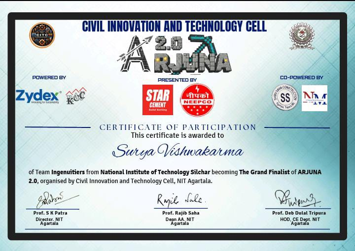
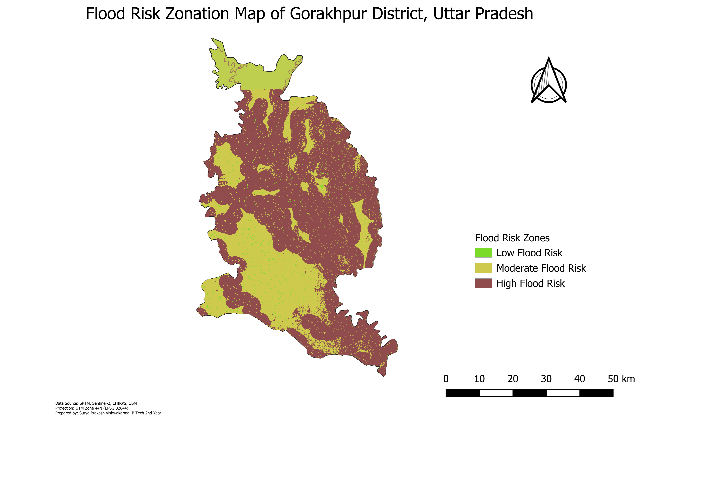
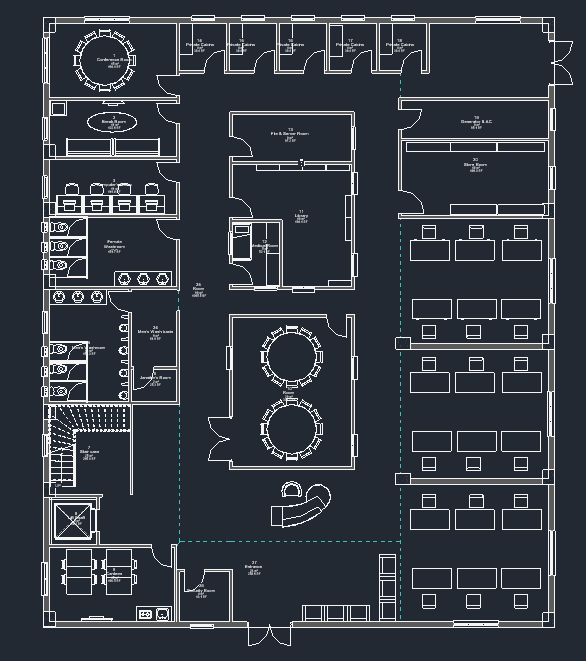
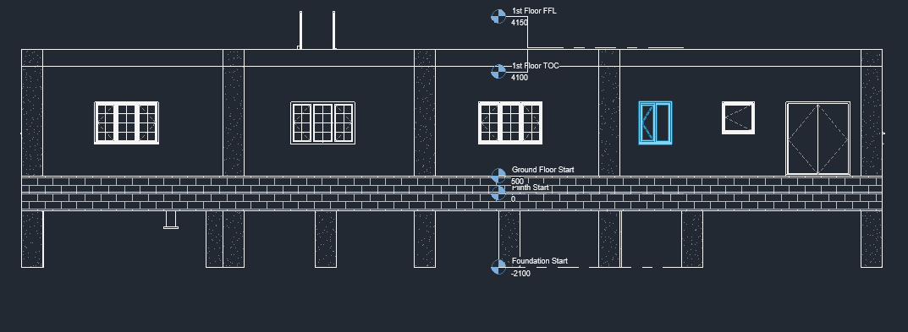

Certificates




Civil Engineering × AI × Geospatial

India Space Academy Internship
Leveraging satellite imagery and machine learning models to map flood-prone zones with high spatial accuracy.
SIH '25 Event
Designing a full-scale commercial office building within a BIM environment, integrating clash detection and 4D scheduling.
NIT Agartala Event
IoT-driven drainage management with AI predictive modeling for real-time urban flood mitigation.
Personal Project — Vibe Coding
A high-performance digital twin portfolio built using 'vibe coding' with AI assistance (Antigravity). Features custom Three.js structural rendering, GLSL shaders, and GSAP cinematic scroll triggers.
ISA Winter Training and Internship
This project utilizes satellite-derived geospatial data, specifically Sentinel-1 SAR imagery and Sentinel-2 optical bands, to identify and delineate flood-affected areas. A supervised machine learning pipeline, including Random Forest and Support Vector Machine classifiers, is trained on labeled water/non-water pixels to generate high-resolution flood extent maps.
The output maps are validated against ground-truth data and integrated into a GIS dashboard for rapid disaster response planning. This work was carried out during the India Space Academy internship program.


NIT Agartala Event
This system integrates IoT water-level sensors with real-time weather API data to predict urban flood bottlenecks before they occur. The core design features an automated sluice gate control mechanism powered by a localized AI predictive model. By analyzing rainfall intensity and current drainage capacity, the system optimizes the flow of water out of critical city zones, preventing infrastructure damage during peak monsoon events.


SIH '25 Event
A comprehensive Building Information Modeling (BIM) project involving the design, analysis, and virtual construction of a multi-storey commercial office building. The model integrates architectural, structural, and MEP disciplines within a collaborative BIM workflow.
Key deliverables include clash detection reports, 4D construction scheduling, and quantity take-off analysis — all produced within Autodesk Revit and Navisworks environments.


Personal Project — Vibe Coding
A high-performance digital twin portfolio built using 'vibe coding' with AI assistance (Antigravity). The site features custom Three.js structural rendering of the Chenab Bridge with stress-map, blueprint, and realistic view modes — all rendered in real-time.
Key technologies: Three.js for 3D geometry and vertex-colored stress analysis, GSAP with ScrollTrigger for cinematic section reveals, and glassmorphism CSS for a dark futuristic aesthetic. The entire build was orchestrated through natural-language prompts, proving that AI-assisted 'vibe coding' can produce production-ready, visually premium web applications.


World's Highest Railway Bridge
| Structural Type | Steel Arch |
| Arch Span | 467 m |
| Height Above River | 359 m |
| Wind Resistance | 260 km/h |
| Designed By | Afcons Infrastructure, DRDO, IISc |
The steel arch acts as the primary load-bearing element. Dead loads from the deck (self-weight of the railway track, ballast, and concrete deck slab) and live loads (train loading as per IRS Bridge Rules) are transferred vertically downward through the spandrel columns into the arch crown. The parabolic geometry of the arch converts these vertical forces into axial compression along the arch rib, channeling the load efficiently toward the abutments at each springing point.
The deck, a composite plate girder system spanning between spandrel piers, experiences bending under direct live loads. The bottom flange of each girder is in tension while the top flange, bonded to the concrete deck slab, resists compression. The deck also acts as a horizontal tie at the crown level, resisting the outward thrust of the arch. This interplay between arch compression and deck tension creates a self-equilibrating structural system that minimizes the horizontal reaction forces transferred to the foundations.
The bridge is designed to withstand wind speeds of up to 260 km/h. Lateral bracing between the twin arch ribs (K-bracing and cross-frames) provides torsional stiffness, while tuned mass dampers address vortex-induced vibrations. Seismic isolation bearings at the deck-pier interfaces allow controlled movement during an earthquake event, protecting the arch from dynamic amplification.